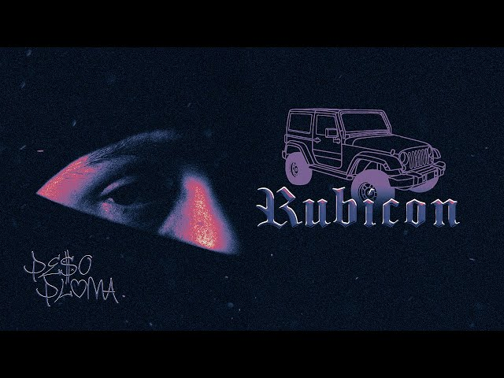
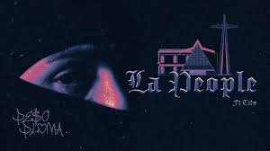
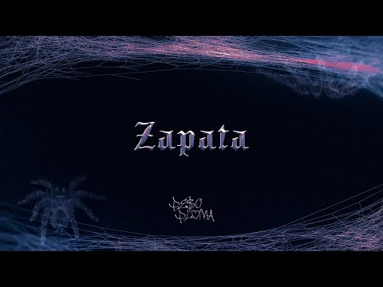
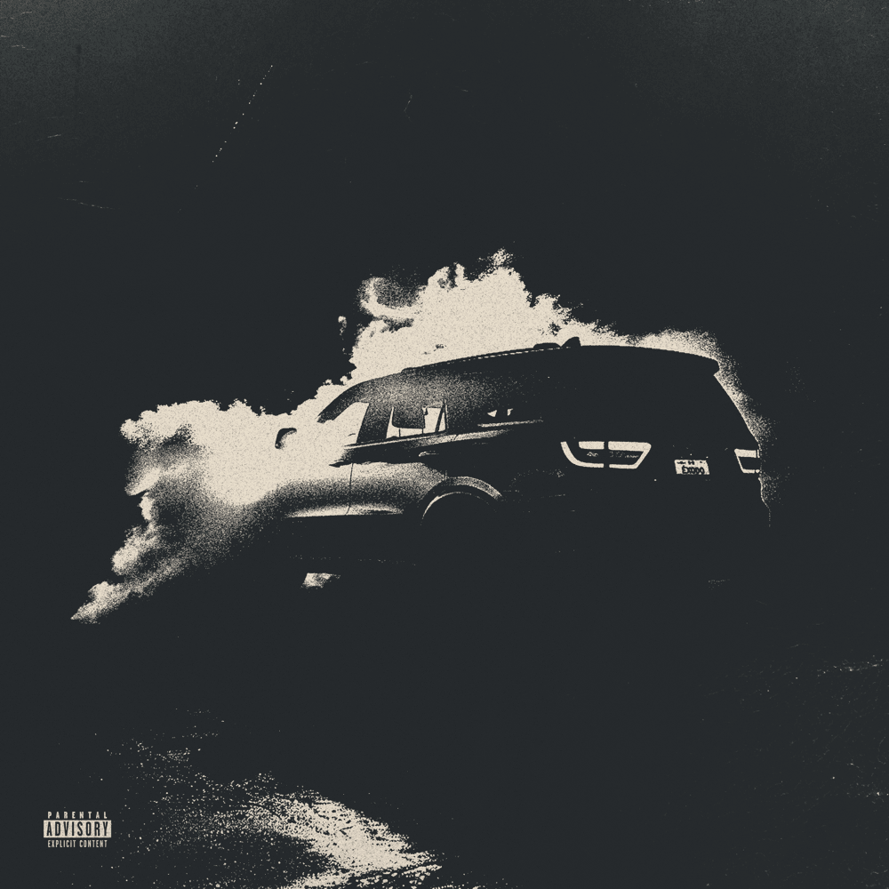

-
 Una de las canciones más populares de Peso Pluma, que ha conquistado las listas de éxitos.
Una de las canciones más populares de Peso Pluma, que ha conquistado las listas de éxitos. -
 Un tema pegajoso que ha resonado con muchos fans.
Un tema pegajoso que ha resonado con muchos fans. -
 Una colaboración inolvidable que muestra la versatilidad de Peso Pluma.
Una colaboración inolvidable que muestra la versatilidad de Peso Pluma. -

Un ritmo contagioso que ha capturado la atención de muchos oyentes.
-
 Una canción emotiva con letras profundas.
Una canción emotiva con letras profundas. -

Un tema energético y lleno de vida.
-
 La continuación de "La People" que ha sido un gran éxito.
La continuación de "La People" que ha sido un gran éxito. -
Una canción con un ritmo único y letras memorables.
-
 Un homenaje personal y conmovedor.
Un homenaje personal y conmovedor. -
 Una continuación esperada que ha cumplido con las expectativas.
Una continuación esperada que ha cumplido con las expectativas. -

Una canción con un mensaje poderoso y una melodía pegajosa.
-

Un tema que captura la esencia de Peso Pluma.
-
Una canción llena de energía y ritmo contagioso.
-
Un tema que muestra la versatilidad musical de Peso Pluma..
-
 Una canción que ha sido un éxito entre los seguidores.
Una canción que ha sido un éxito entre los seguidores.